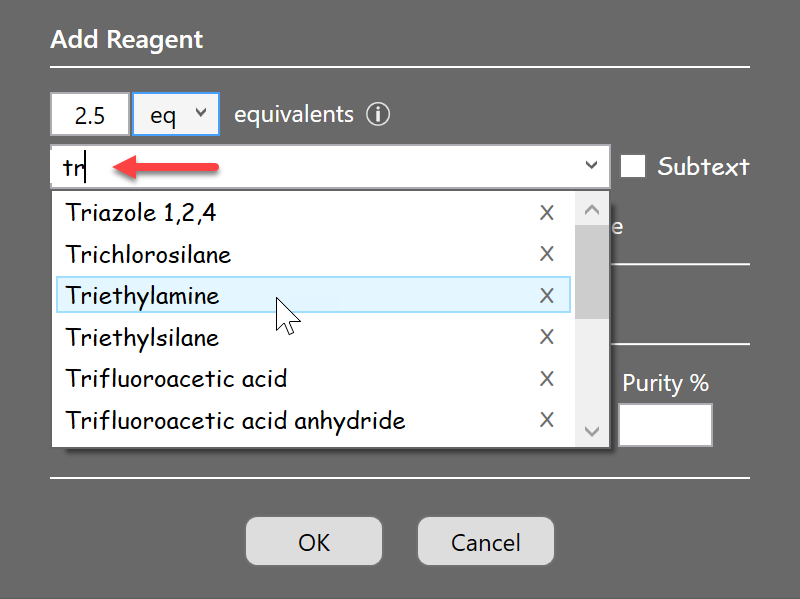
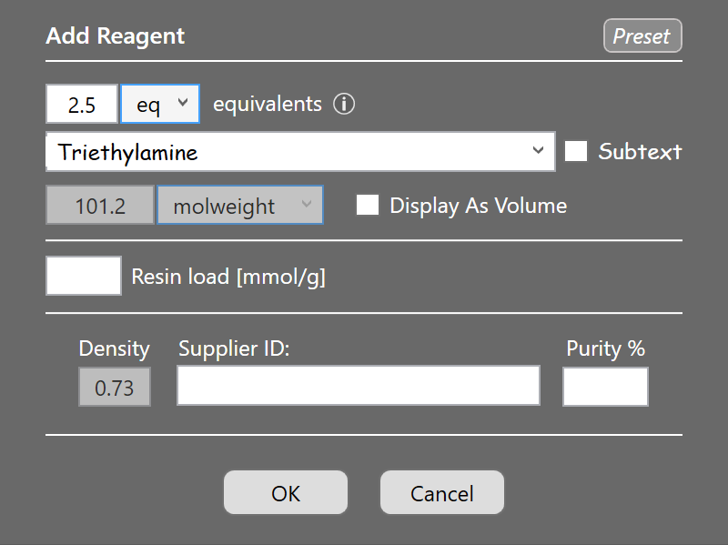
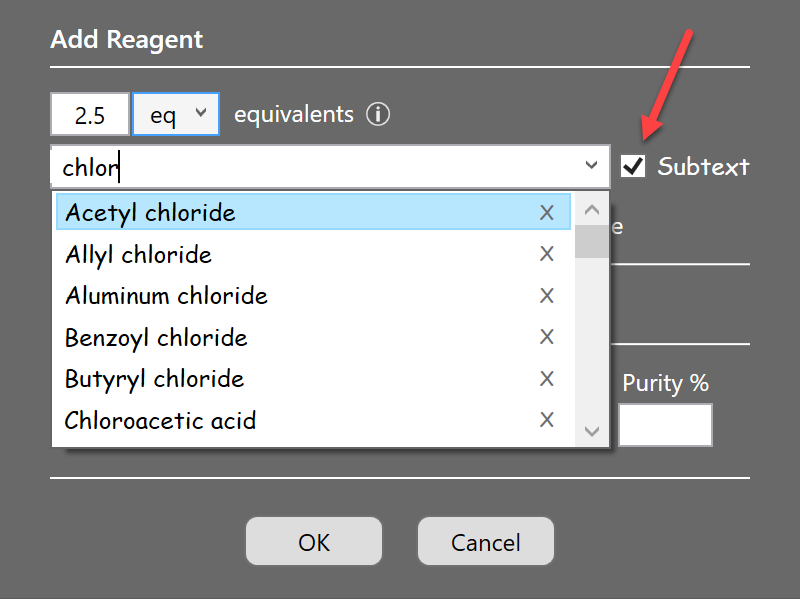
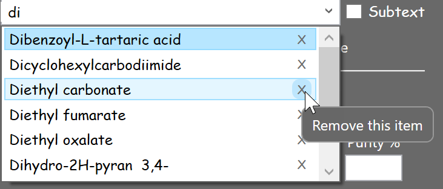

Materials Database

Addition Dialogs
Although the material addition dialogs slightly vary for each material category, they share some common functionalities. Let's take the reagent addition dialog as an example:
- Materials dropdown: When you start typing the first few letters of a material into its name box, a dropdown menu opens, containing all database reagents starting with the typed letters.

If the desired reagent already was used before in the ELN, it will be present in the list and you can click it to populate the dialog with its last assigned properties. If 'Triethylamine' was selected, molecular weight and density are assigned as shown below. The Preset label in the top-right corner means that this is a predefined material whose properties were cross-checked for accuracy by the developer, and therefore can't be modified by the user. This restriction does not apply to own materials.

- Subtext Searches: When the Subtext checkbox is checked, then all materials containing the typed characters anywhere in their name are listed:

- Materials Removal: Database materials can be removed by clicking the x icon to the right of their entry:
